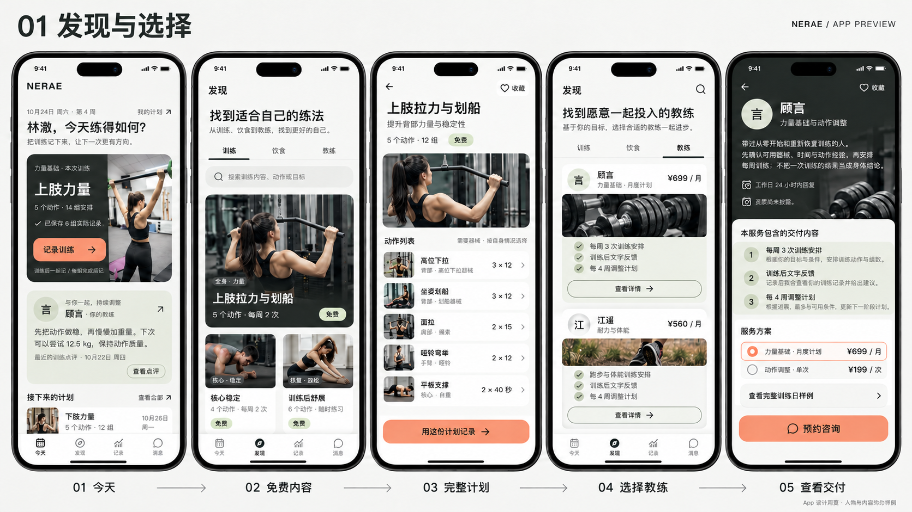
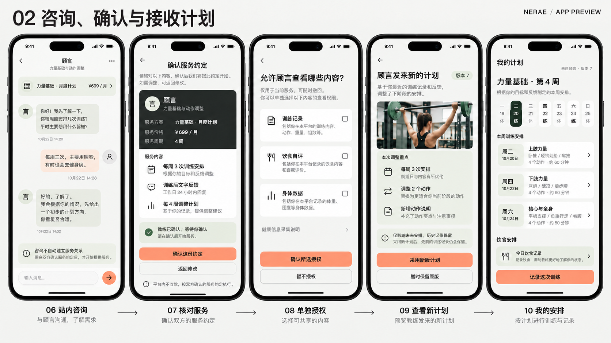
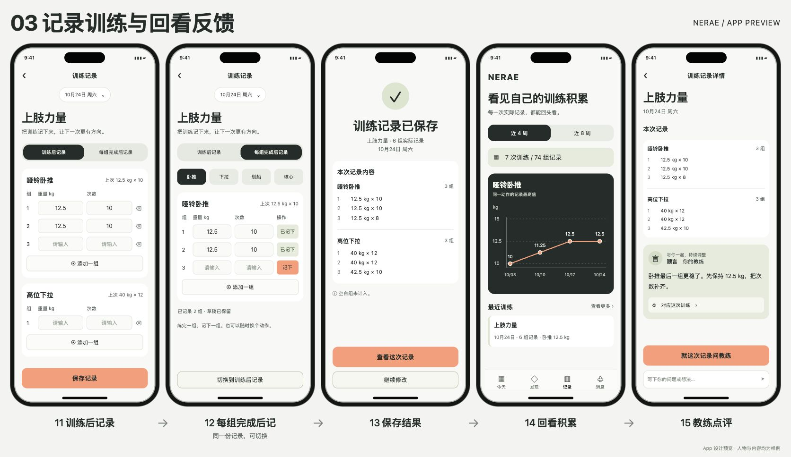
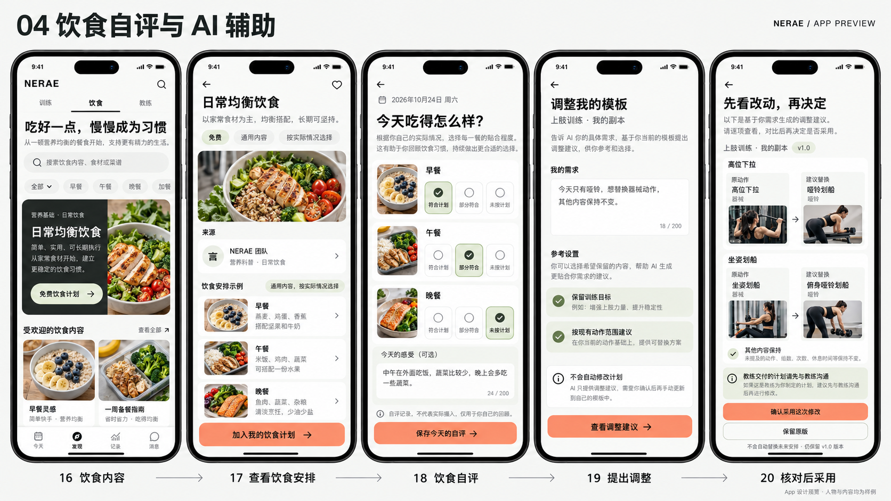
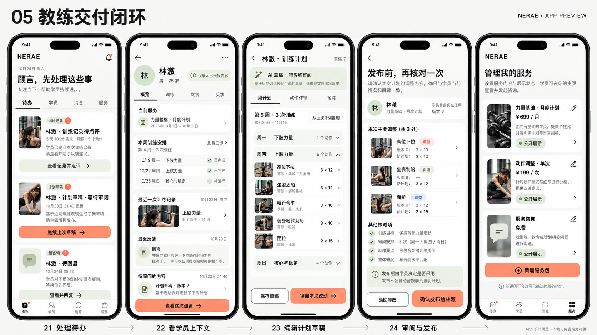
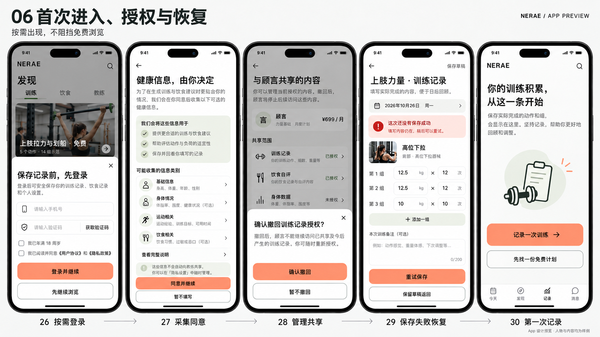

01 发现与选择
首页 → 免费内容 → 完整计划 → 教练列表 → 服务交付。点击图像可查看原尺寸。

02 咨询、确认与接收计划
咨询 → 服务约定 → 单独授权 → 查看新计划 → 我的安排。点击图像可查看原尺寸。

03 记录训练与回看反馈
训练后记录 / 每组完成后记录 → 保存结果 → 回看积累 → 教练点评；前两屏是同一份记录的两种方式。点击图像可查看原尺寸。

04 饮食自评与 AI 辅助
饮食内容 → 饮食安排 → 自评 → AI 调整意图 → 核对后采用。点击图像可查看原尺寸。

05 教练交付闭环
待办 → 学员上下文 → 编辑草稿 → 审阅发布 → 服务管理。点击图像可查看原尺寸。

06 首次进入、授权与恢复
按需登录、独立采集同意、管理共享、失败恢复与首次记录；这些是分支状态。点击图像可查看原尺寸。
